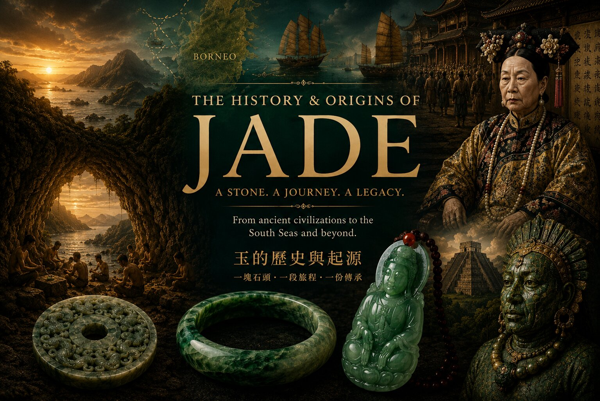
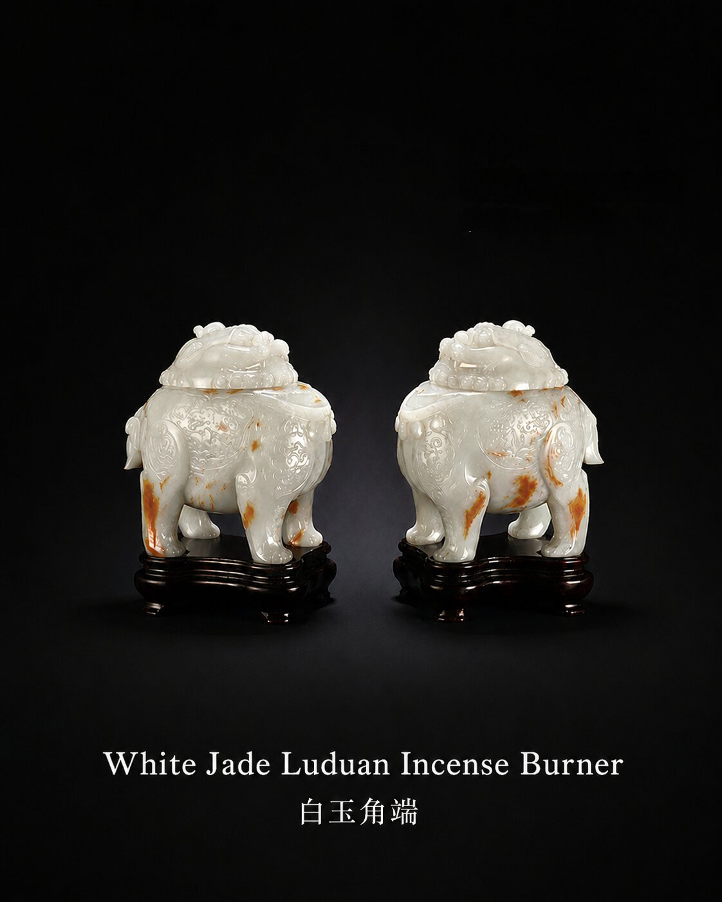
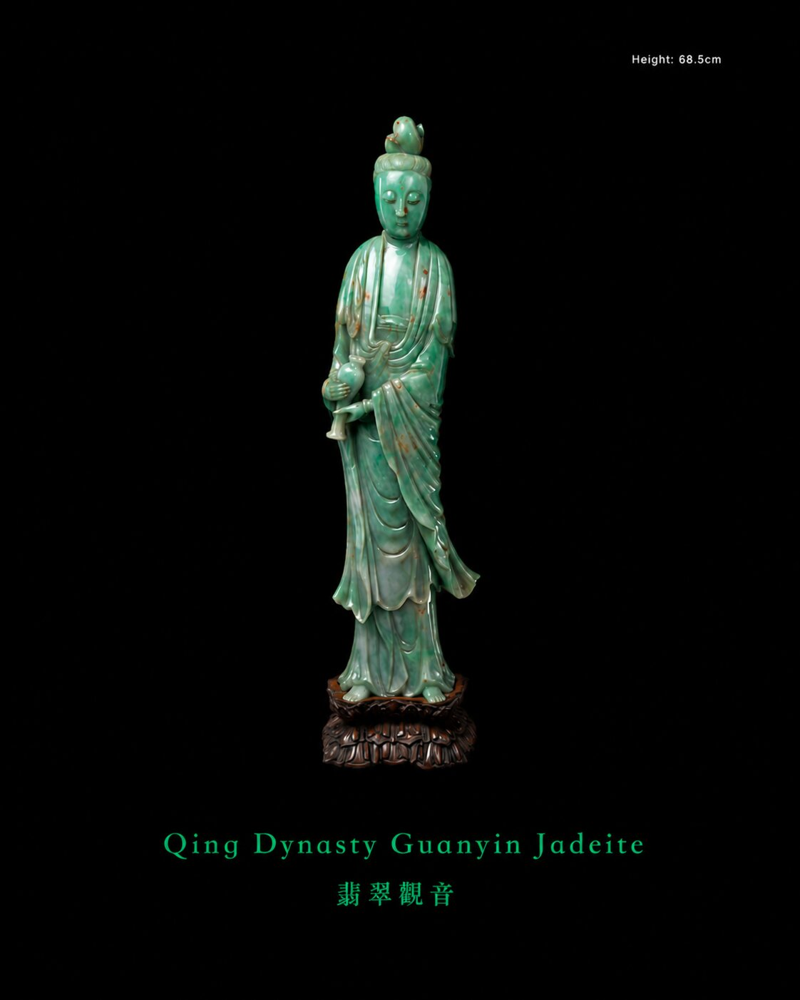
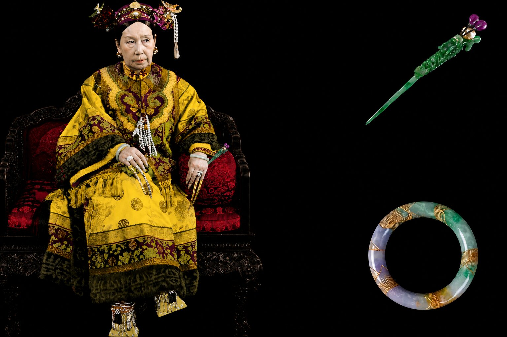
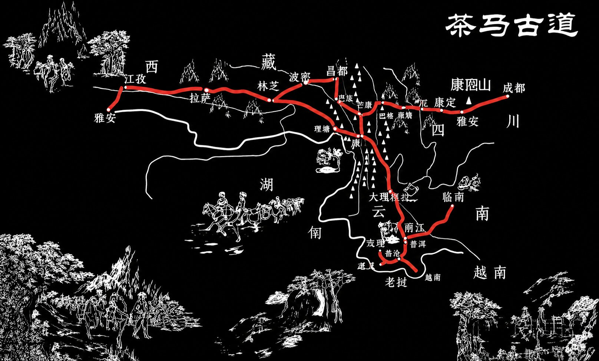
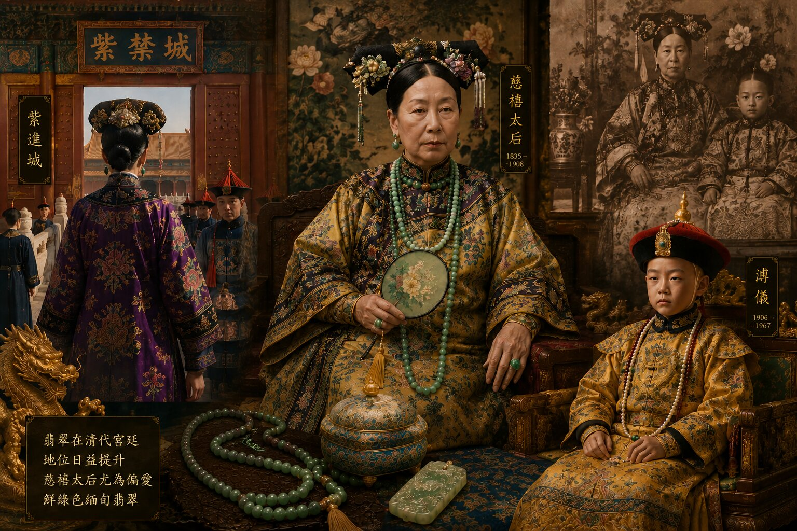
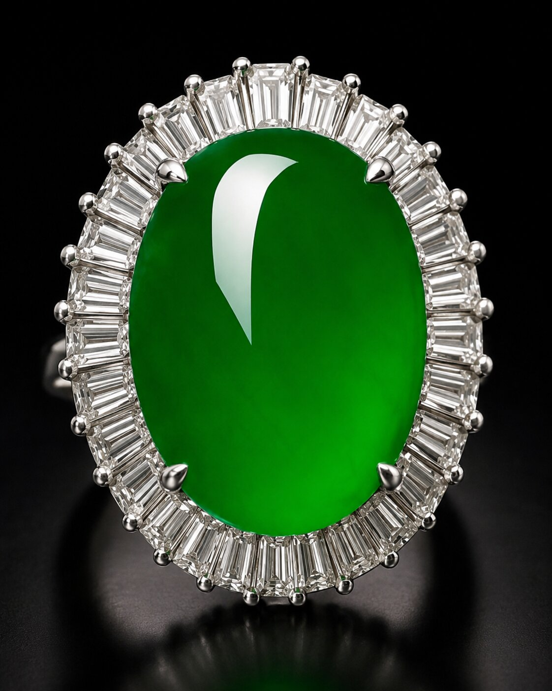
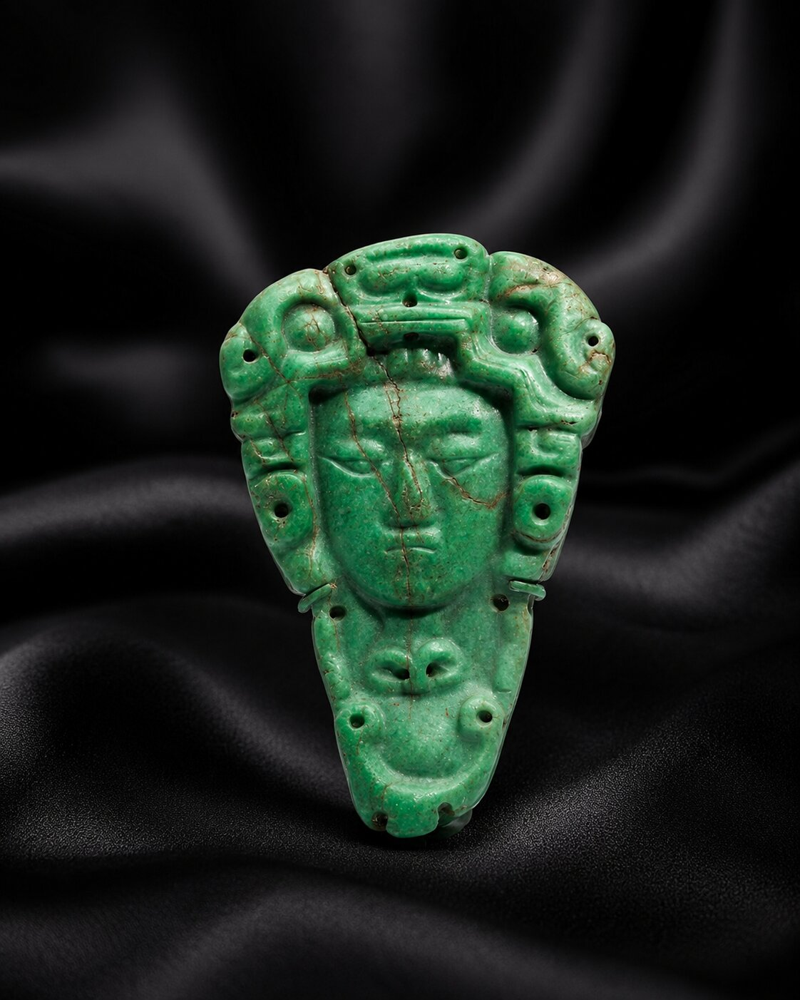
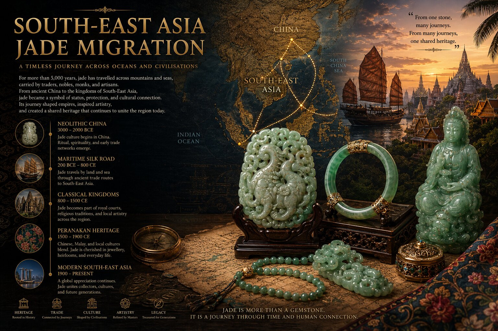
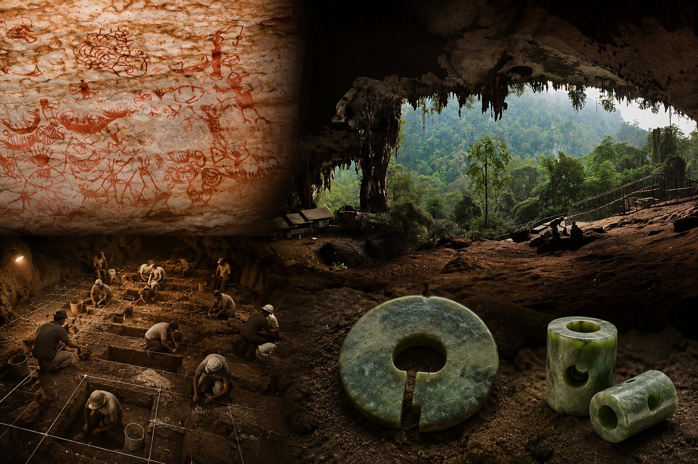

History & Origins of Jade
Jade did not move through history as one simple object. It travelled through geology, dynasties, trade routes, migration, family memory and modern collecting culture. This bilingual guide follows jade from ancient nephrite traditions to Burmese jadeite, Qing imperial taste, Mesoamerican jadeite and the journeys of South-East Asia.

Jade Was Loved Before It Was Named.
Long before modern geology classified minerals, people already understood jade through touch, colour, weight and meaning.
Ancient communities did not begin with chemistry. They began with feeling. Coolness in the hand. Strength under carving. Light moving differently beneath stone.
Today gemmology separates jade into two recognised minerals:
Nephrite.
Jadeite.
One cultural name. Different geological stories.
Nephrite shaped much of early Chinese jade history.
Jadeite entered later through northern Myanmar trade systems and gradually transformed visual taste.
玉，在科學以前，已被珍視。
在礦物學出現以前，人們早已認識玉。
不是透過化學。
而是透過感受。
溫潤感。 重量感。 光感。 堅韌度。
今日寶石學主要把玉分為：
軟玉 Nephrite
硬玉 Jadeite
同樣被稱為玉。
但形成故事不同。


A Different Stone. A Different Chapter.
Early Chinese jade history largely centred around nephrite.
But history moved.
Trade expanded.
Another stone gradually entered elite appreciation.
Jadeite.
Formed under different geological conditions.
Different pressure. Different chemistry. Different optical behaviour.
Exceptional jadeite could display stronger translucency and more vivid colour contrast.
Routes linking northern Myanmar and Yunnan gradually carried Burmese jadeite into Chinese collecting culture.
Taste changed quietly.
Luxury evolved.
另一種石頭。 另一段歷史。
中國早期玉文化。 主要圍繞軟玉。
但歷史會前進。
另一種礦物。 慢慢進入收藏文化。
翡翠。 硬玉。
形成條件不同。
結構不同。
視覺表現不同。
緬甸北部與雲南商路。 逐漸把硬玉帶進文化世界。
When Jadeite Entered Imperial Taste.
By the Qing dynasty, especially later Qing periods, Burmese jadeite increasingly entered elite collecting culture.
Brighter colour. Different translucency. New visual language.
One historical figure later became strongly associated with late Qing jadeite appreciation.
Empress Dowager Cixi.
Important detail:
Cixi did not create jadeite.
Jadeite already existed. Trade already existed.
But imperial preference influences culture.
Culture influences collecting.
Collecting influences history.
當翡翠走進宮廷審美。
到了清朝。 尤其清朝後期。
翡翠開始進入更高層收藏文化。
其中常被提起的人物：
慈禧太后。
但歷史需要準確。
翡翠並不是慈禧創造。
慈禧以前。 翡翠已存在。
宮廷喜好。 會影響文化。

History Becomes Better. Not Smaller. When It Becomes More Accurate.
Stories become stronger when facts stay clear.
Empress Dowager Cixi remains closely associated with vivid Burmese jadeite in late Qing collecting culture.
Yet jadeite history stretches far beyond one individual.
Trade networks. Miners. Merchants. Artisans. Collectors. Dynasties. Migration.
Stone rarely changes history alone.
People move stone. People shape meaning.
真正歷史。 不怕細看。
當事實更準確。 故事不會變小。
反而更完整。
慈禧太后與晚清緬甸翡翠審美有密切歷史連結。
但翡翠歷史。 從來不只屬於一個人。
礦工。 商人。 工匠。 收藏家。 王朝。 遷徙。
共同形成今天我們理解的翡翠文化。

Before Trade. There Was Mountain.
Beautiful jewellery begins much earlier than jewellery.
Long before workshops. Long before collectors. Long before dynasties.
Nature was already building jadeite.
Northern Myanmar is one of the world’s important jadeite-bearing geological regions.
Jadeite generally forms under highly specialised geological conditions: very high pressure and relatively lower temperature metamorphic environments.
Not every mountain can form jadeite.
Not every region can preserve it.
Nature required extraordinary conditions.
Time completed the rest.
珠寶以前。 先有山。
美麗珠寶。 真正開始得更早。
早於工坊。 早於收藏。 甚至早於王朝。
大自然。 早已開始形成翡翠。
緬甸北部。 是世界重要硬玉地質帶之一。
翡翠形成需要非常特殊條件： 高壓、相對低溫，以及長時間地質作用。
不是每座山都能形成翡翠。
也不是每片土地都能留下它。
Stone Moved. History Moved Too.
A stone hidden inside mountains changes little.
A stone carried by people changes history.
Trade systems gradually connected northern Myanmar to Yunnan and beyond.
Mountain pathways. River systems. Commercial exchange. Migration.
Across generations, stone travelled.
And when stone travelled, culture travelled too.
Taste evolved. Collecting changed. Luxury changed.
Trade routes do more than move products.
They move civilisation.
石頭開始移動。 歷史也一起移動。
留在山裡的石頭。 影響有限。
被人帶出來的石頭。 可能改變歷史。
區域商路逐漸把緬甸北部與雲南連接起來。
山路。 河流。 商業交流。 人口移動。
石頭開始移動。 文化也一起移動。
審美開始改變。 收藏開始改變。

Taste Quietly Changes History.
For centuries, earlier Chinese jade culture focused heavily on nephrite.
Then taste expanded.
Jadeite slowly entered elite appreciation.
Collectors encountered stronger colour contrast, new visual character and different crystal behaviour.
Bright green Burmese jadeite gradually developed stronger association with prestige and upper collecting culture.
Importantly, jadeite did not erase older jade traditions.
It expanded them.
審美開始改變。 歷史也開始改變。
很長時間裡。 中國玉文化主要圍繞軟玉發展。
後來。 審美慢慢開始變化。
翡翠逐漸進入收藏文化。
新的顏色。 新的通透感。 新的視覺體驗。
鮮綠色翡翠。 慢慢與收藏、身份、珠寶文化產生更深連結。
但重要的是，翡翠沒有取代過去文化。
它讓原本文化變得更豐富。


Cixi. Prestige. And Late Qing Jadeite.
By the late Qing period, Empress Dowager Cixi became strongly associated with vivid Burmese jadeite.
Historical collections suggest jadeite increasingly entered elite jewellery culture during this era.
Colour. Brightness. Contrast. Translucency.
Visual taste influences collecting.
Collecting influences markets.
Markets influence history.
Jadeite did not create Chinese jade culture.
But jadeite changed what luxury jade could become.
慈禧。 晚清。 翡翠地位的提升。
清朝後期。 慈禧太后逐漸與鮮綠色緬甸翡翠產生歷史連結。
部分館藏與歷史收藏，也顯示翡翠逐漸進入宮廷珠寶文化。
色彩。 亮度。 通透感。 視覺層次。
審美影響收藏。 收藏影響市場。 市場最後影響歷史。
翡翠沒有創造中國玉文化。
但它改變了奢華玉器的可能性。

Another Jade Story. Across An Ocean.
For many people in Asia, jade history begins with China.
But jade history belongs to more than one civilisation.
Across the Pacific Ocean, ancient Mesoamerican civilisations also built profound relationships with jade.
Especially the Maya.
Long before global trade, modern collecting and luxury branding, Maya communities already treasured jadeite deeply.
Jade appeared in ceremonial objects, royal ornaments, burial traditions, elite symbolism and sacred meaning.
Two distant civilisations. Different languages. Different histories. Yet both chose jade.
玉的歷史。 其實不只在亞洲。
很多亞洲人提到玉，會先想到中國。
但玉從來不只屬於一個文明。
太平洋另一端，古代中美洲文明同樣重視硬玉。
尤其馬雅文明。
在全球化以前，在現代收藏以前，在奢侈品牌以前，玉早已進入王族、儀式、身份象徵與精神文化。
兩個文明，彼此沒有相遇，卻同時看見玉的重要。
Before Silk Road. There Was Sea.
Long before the Silk Road became famous, ancient maritime exchange systems already connected island Asia.
Researchers today call one remarkable network: The Maritime Jade Road.
Research generally places this exchange system roughly between 2000 BCE and 1000 CE.
Ancient Austronesian seafarers moved materials. Technology. Craftsmanship. Ideas. Culture.
Scientists studying archaeological jade discovered something extraordinary.
Some nephrite artefacts discovered across island Southeast Asia shared geological signatures linked to eastern Taiwan.
Stone moved. Knowledge moved. People moved.
絲路以前。 海洋已經開始連接文明。
在絲路聞名以前， 古代海洋交流早已存在。
研究今天常稱這套交流系統： 海上玉路。
研究普遍認為， 活躍年代約介於西元前兩千年至西元一千年前後。
古代南島語族航海者， 透過海洋交換材料、 工藝與文化。
部分東南亞出土玉器， 被發現與東台灣礦源存在關聯。
石頭移動。 知識移動。 人也移動。
Stone. Sea. Movement.
Research connected to Maritime Jade Road studies frequently highlights eastern Taiwan.
Nephrite deposits from eastern Taiwan became important to ancient exchange systems.
Archaeological evidence suggests materials moved southward through island networks linking Taiwan, the Philippines and island Southeast Asia.
This movement happened long before modern borders existed.
Long before passports. Long before airports.
Sea connected people. Not separated them.
石頭。 海洋。 移動。
研究海上玉路時， 東台灣常被提起。
部分東台灣軟玉礦源， 成為古代交流系統重要材料來源。
研究顯示， 部分材料透過島嶼系統往南移動。
連接台灣、 菲律賓與東南亞。
那時沒有護照。 沒有機場。
海洋不是阻礙。 而是道路。


Niah Cave. A Quiet Historical Clue.
Sarawak preserves one of Southeast Asia's important archaeological stories.
Niah Cave.
Archaeological discoveries connected ancient Borneo communities to wider exchange systems.
Researchers identified jade artefacts connected to larger maritime networks.
One object became especially significant.
Lingling-o.
Distinctive ear ornaments appearing across Austronesian exchange systems.
Small object. Large historical meaning.
砂拉越。 尼亞洞。 一個安靜的重要線索。
砂拉越保存東南亞重要考古故事之一。
尼亞洞。
研究讓古代婆羅洲社群， 與更大交流系統產生連結。
研究人員發現部分玉器， 與古代海洋交流存在關聯。
其中重要器物之一： Lingling-o。
很小。
但歷史很大。
Questions People Often Ask
Is jade the same as jadeite?
No. Jade generally refers to nephrite and jadeite. They are different minerals.
Is nephrite fake jade?
No. Nephrite is genuine jade.
Did Empress Dowager Cixi create jadeite culture?
No. Jadeite existed before Cixi. She later became strongly associated with late Qing appreciation of Burmese jadeite.
What is Maritime Jade Road?
An ancient maritime exchange network linking Taiwan, Philippines and island Southeast Asia.
Why does Ixchell Jewellery explain jade history?
Because understanding matters before collecting. Knowledge creates confidence.
Learn Jade Before You Choose Jade.
Ixchell Jewellery specialises in natural Type A Burmese jadeite.
Located at The Adelphi near City Hall MRT Singapore.
Many visitors come not only to purchase. But to understand.
Walk-ins welcome whenever possible. For quieter viewing experience, Instagram DM before visiting is gently encouraged.